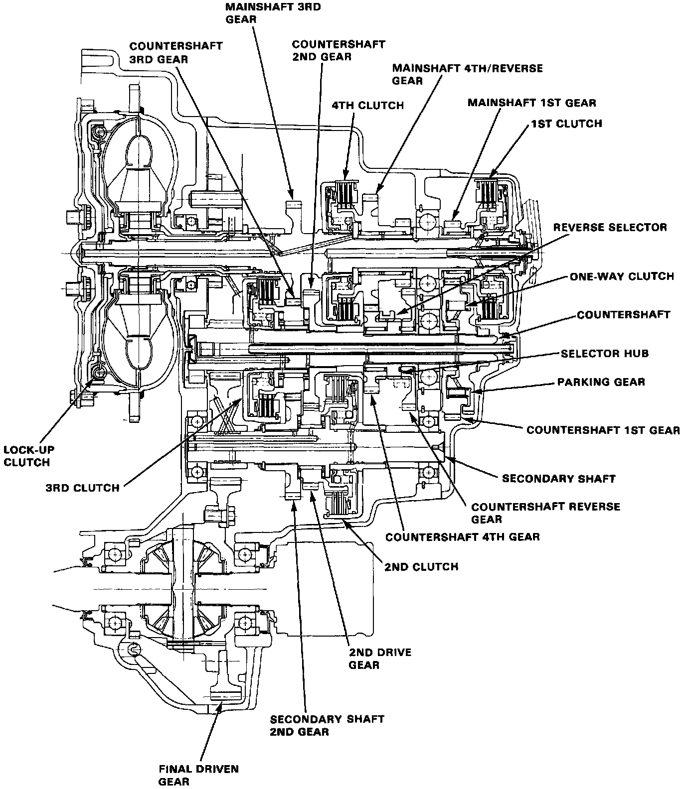
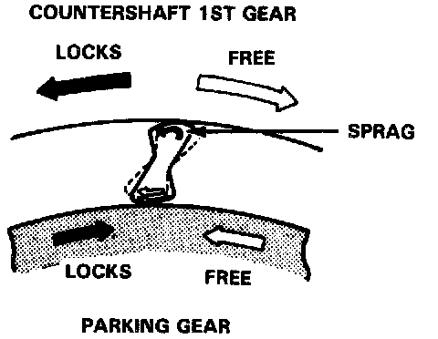
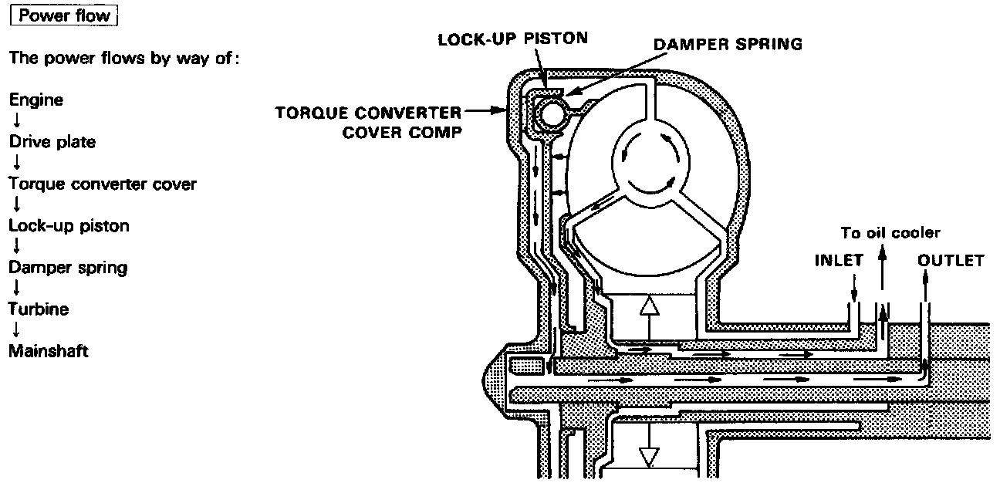
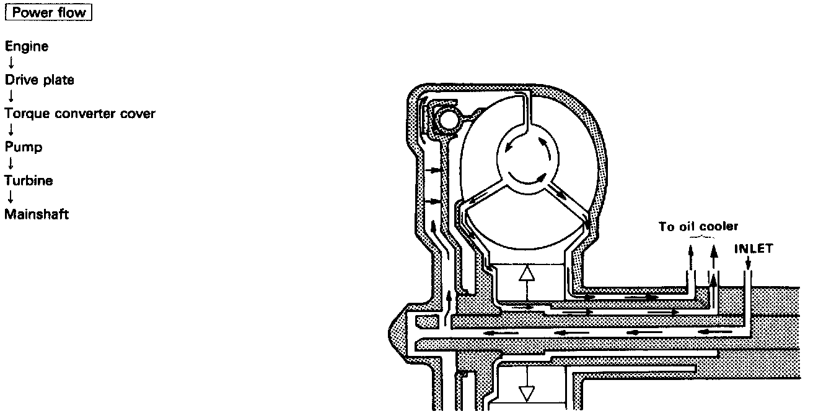

Clutches

Clutches
[1st Clutch]
The 1st clutch is on the right end of the mainshaft. In the [S3] , [S4], or [D] range, constant hydraulic pressure is applied to the mainshaft through the 1st clutch to the mainshaft 1St gear.
The clutch plate is mounted on the clutch drum, while the clutch disc is fitted to the mainshaft 1st gear.
The 1st gears are attached to the mainshaft and countershaft through needle bearings, one for each gear.
When select lever is placed in the [S3] ,[S4] or [D] range,hydraulic pressure is applied from the right side cover through the mainshaft, and thus to the clutch drum; as the pressure rises, the clutch piston presses the clutch plate and clutch disc, thus causing the clutch to engage.
Power is transmitted from the mainshaft 1st gear, through the countershaft 1st gear, to the one-way clutch, parking gear, and finally to the countershaft. The one-way clutch locks in the forward direction when in 1st gear. In the [S3], [S4] or range, all others besides 1st gear are not engaged, thus transmitting no power.
[2nd Clutch]
The 2nd clutch is on the secondary shaft, and is the same construction as the 1st clutch. The secondary shaft 2nd drive gear uses a needle bearing. The countershaft 2nd gear is splined to the countershaft.
In 2nd gear of [2], [S3], [S4], or [D], hydraulic pressure is applied to the clutch drum from the secondary shaft, thus transmitting power from the mainshaft 3rd gear, countershaft 3rd gear, secondary shaft 2nd gear, 2nd drive gear to the countershaft 2nd gear.
[3rd Clutch]
The 3rd clutch is on the left end of the countershaft.
The clutch hub is joined to the countershaft 3rd gear, on the countershaft, supported by a single needle bearing.
In 3rd gear of [S3], [S4] , or [D], hydraulic pressure is applied to the 3rd clutch on the countershaft, thus causing the clutch to engage, and transmitting power.
[4th Clutch]
The 4th clutch is on the center of the mainshaft. The clutch hub is joined to the mainshaft 4th gear and reverse gear, supported by two needle bearings.
In 4th gear of [S4] , or [D], hydraulic pressure is generated within the mainshaft, applying pressure to the 4th clutch on the mainshaft.

[One-way Clutch]
A one-way clutch disengages 1st gear when in 2nd, 3rd and 4th gear ranges. The clutch is splined on the countershaft between 1st gear and the parking gear, with sprag elements and the retainer which supports the central section between the springs, when countershaft 1st gear rotates clockwise and parking gear counterclockwise, the springs incline to the right, locking the gears together. When shifting from 1st to 2nd in the [S3], [S4] or[D] range, the higher ratio of 2nd gear causes the countershaft to rotate clockwise at a speed greater than that of 1st gear. The parking gear then rotates clockwise, and the springs move away from their locking position. In [S3] , [S4], or [D] the higher ratio of 3rd gear prevents the springs from locking, keeping 1st gear disengaged.

Lock-up Clutch
1. Operation (clutch on)
With the lock-up clutch on, the oil in the chamber between the converter cover and lock-up piston is discharged, and the converter oil exerts pressure through the piston against the converter cover. As a result, the converter turbine is locked on the converter cover firmly. The effect is to bypass the converter, thereby placing the car in direct drive.

2. Operation (clutch off)
With the lock-up clutch off, the oil flows in the reverse of CLUTCH ON. As a result, the lock-up piston is moved away from the converter cover; that is, the torque converter lock-up is released.